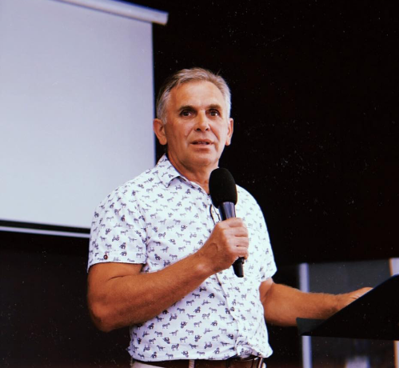

<section class="about-pastor">
    <div class="wrapper about-pastor__container">
        <div class="container__left"></div>
        <div class="container__right">
            <p class="right__text">Отчий дом — это христианская протестантская церковь.
                Церковь была основана в 2006 году Александром Хомяковым, который и по сей день является старшим пастором церкви.
                Отчий дом начинался с 30 человек и собраний в арендованном помещении. В 2018 году церковь переехала в свое собственное здание, и сегодня ее посещают порядка 600 человек.
            </p><br>
            <p class="right__text">Александр Хомяков — пастор церкви, рукоположенный на это служение в 1993 году, еще до появления Отчего дома. </p>
            <p class="right__text"> Вся семья пастора — служители: жена и две дочери служат в группе прославления, а сын является молодежным лидером.
                Александр Хомяков — любящий пастор, посвятивший большую часть своей жизни Богу и созданию поместной церкви, миссия которой — приближение людей к Иисусу.
            </p>
        </div>
    </div>
</section>